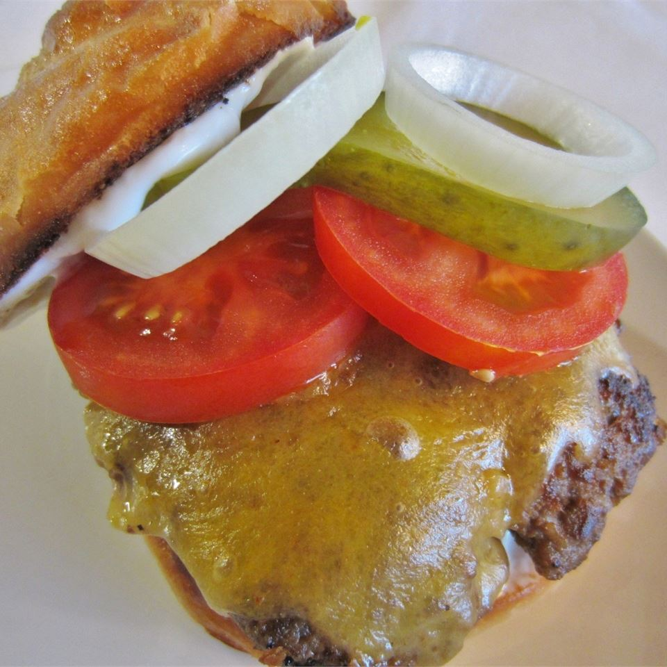

Delicious Bronco Burger!

Description
This is the delicious bronco burger that has been in my family for thousands of years!
It is the juciest and tastiest burger ever and its so good it makes you wanna slap yo momma!
Ingredients
- 5 Fresh Jalapenos
- 4 pounds ground beef
- Salt and pepper
- 1 egg
- 1/4 cup steak sauce
- 1/4 minced white onion
- 1 teaspoon hot pepper sauce
- 1 pinch dried oregano
- 1 tablespoon Worcestshiriehidneind
- 1 teaspoon garlic salt
- 1/4 cup fritos (nasty don't actually do it)
- 8 large potato buns
- 8 sliced peperjack cheese
Directions
- Preheat a grill for high heat. When the grill is hot, roast the jalapeno peppers until blackened on all sides. Place in a plastic bag to sweat and loosen the blackened skin. Rub the skin off, then seed if desired, and chop.
- In a large bowl, use your hands to mix together the chopped jalapenos, ground beef, salt, pepper, egg, steak sauce, onion, hot pepper sauce, oregano, Worcestershire sauce, garlic salt and Fritos®. Divide into 8 balls, and flatten into patties.
- Grill patties for 10 to 15 minutes, turning once, or until well done. I always drink one beer, then flip, drink another beer, then remove from the grill and place on buns. Top each one with a slice of pepperjack cheese and pig out!